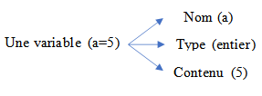

Variable et constante
Notion de variable
Variable : Un objet pouvant prendre différentes valeurs tout au long de l’exécution d’un algorithme ou d’un programme.
visualisation de variable
Notation Algorithmique
a : entier
Notation en C :
int a;
Notion de constante
Contrairement aux variables, les constantes sont des données dont la valeur reste fixe durant l'exécution du programme.
Notation Algorithmique
Exemples : Pi = 3.14, g = 9.80, etc.
Notation en C :
void main() {
const float PI = 3.14159;
//...
}
Le compilateur réserve de la place en mémoire pour la variable PI, mais sa valeur ne peut être changée.
Notion de type
Chaque variable dans un programme doit avoir un type qui définit :
- L’ensemble des valeurs que peut prendre la variable
- L’ensemble des opérations qu’on peut appliquer à la variable
Principaux types en algorithmique :
- Type entier
- Type réel
- Type caractère
- Type chaîne de caractères
- Type logique (booléen)
Le type entier
Une variable est dite entière si elle prend ses valeurs dans Z (ensemble des entiers relatifs).
Notation Algorithmique :
a : entier
Notation en C :
int a;
| Opération | Notation Algorithmique | Notation en C |
|---|---|---|
| Addition | + | + |
| Soustraction | - | - |
| Multiplication | * | * |
| Division entière | div | / |
| Modulo | mod | % |
Exemples:
13 div 5 = 2
13 mod 5 = 3
L’ensemble de valeurs que peut prendre un entier varie selon le langage de programmation utilisé étant donné que le nombre de bits réservés pour une variable de ce type n’est pas le même.
Le langage C distingue plusieurs types d’entiers

Le type réel ou décimal
Le type réel représente un ensemble de valeurs prises dans ℝ (ensemble des nombres réels). En C, il existe plusieurs types de réels, principalement deux types :
Notation Algorithmique :
a : reel
Notation en C :
float a;
Le langage C distingue principalement 2 types de réels:

| Opération | Notation Algorithmique | Notation en C |
|---|---|---|
| Addition | + | + |
| Soustraction | - | - |
| Multiplication | * | * |
| Division réelle | / | / |
Le type caractère
Un caractère peut être un chiffre, une lettre ou un caractère spécial, et il est toujours noté entre des guillemets.
| Opération | Notation Algorithmique | Notation en C |
|---|---|---|
| Égal | = | == |
| Différent | # | != |
| Inférieur | < | < |
| Supérieur | > | > |
Notation Algorithmique :
c : caractère
Notation en C :
char c;
Remarque : En C, le type char est un cas particulier du type entier, représentant un entier de 8 bits (un caractère ASCII).
Le type logique ou booléen
Une variable logique ne peut prendre que les valeurs "Vrai" ou "Faux". Les opérations principales sont : négation, intersection (ET), et union (OU).
| A | B | NON (A) | A ET B | A OU B |
|---|---|---|---|---|
| Vrai | Vrai | Faux | Vrai | Vrai |
| Vrai | Faux | Faux | Faux | Vrai |
| Faux | Vrai | Vrai | Faux | Vrai |
| Faux | Faux | Vrai | Faux | Faux |
Exemple : Types personnalisés
Types
Saison = ("A", "H", "P", "E")
Tnote = 0 .. 20
Variables
s : Saison
note : Tnote
La variable s ne peut prendre que les valeurs "A", "H", "P", ou "E".